Climbing
Climbing Thinking about Africa, we often picture endless savannahs and deserts. There is truth in this since the African continent mainly consists of plains, plateaus, and highlands. There are also valleys occupied by the Congo River basin, deserts like the Kalahari, and lakes. Perhaps one of the most striking examples of a great lake is Lake Tanganyika, the deepest on the continent.
Are there mountains in Africa?
Yet, Africa is also home to mountains—some surpassing the heights of those in Europe, Australia, or Antarctica. Mountain systems are scarce, with the most prominent being the Atlas Mountains in northwest Africa and the Cape Fold Mountains in the far south. The Cape Fold Range lies entirely within South Africa, while the Atlas Mountains traverse Morocco, Algeria, and Tunisia. However, neither finds a place among the continent's highest.
What is the longest mountain chain in Africa?
The Great Escrapement, constituting the longest mountain chain in Africa, similarly falls short of the highest rankings. Formed millions of years ago, the Great Escarpment spans about 5000 km (3,107 mi) today and is situated in southern Africa. Its most renowned segment is the Drakensberg Mountains in South Africa.
Many mountains in Africa stand independently as volcanoes, a consequence of global tectonic processes within the lithospheric plates. It is precisely volcanoes that make it into the list of the continent's highest mountains.
African glaciers
Approximately half of the top 10 mountains in Africa harbor glaciers on their summits. Unique equatorial glaciers are rapidly diminishing, with scientists predicting their eventual disappearance. This fate awaits even Africa's loftiest peak—Kilimanjaro.
While Kilimanjaro's name is widely recognized, what about the others? In this article, let’s take a look at the list of the ten highest mountains in Africa. We'll discuss where they are located, what makes them notable, when they were first conquered by humans, and what modern expeditions to their summits entail.
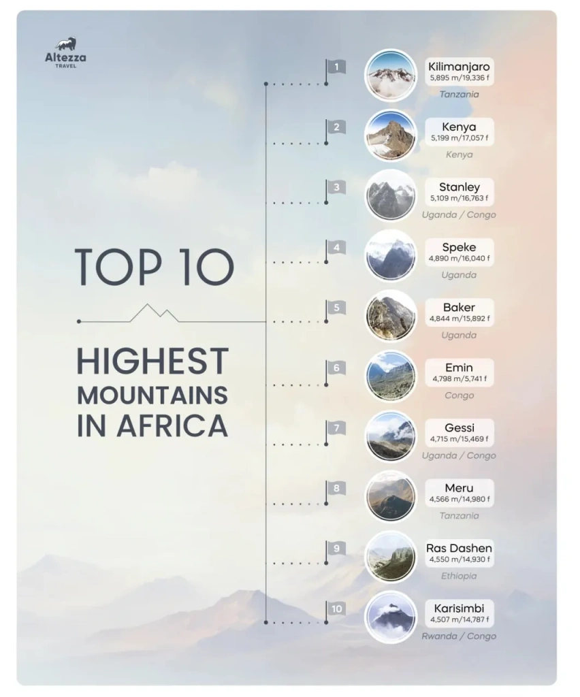
10th Place: Mount Karisimbi — 4507 meters (14,787 feet)
Karisimbi is a dormant volcano on the border between Rwanda and the . Its
peak is considered the highest point in Rwanda as it lies within the
territory of this country. Geographically located in East Africa, the
volcano is part of the and is a
peak of the Virunga mountain range, which consists of eight volcano chains.
Virunga translates to "volcanoes" in the local language.
Name: Mount
Karisimbi
Height: 4507 meters (14,787 feet)
Countries: Rwanda, DRC
First Ascent: 1903, R. P. Barthelemy
Difficulty of Ascent: Requires good physical preparatio
Expedition Duration: 1–2 days
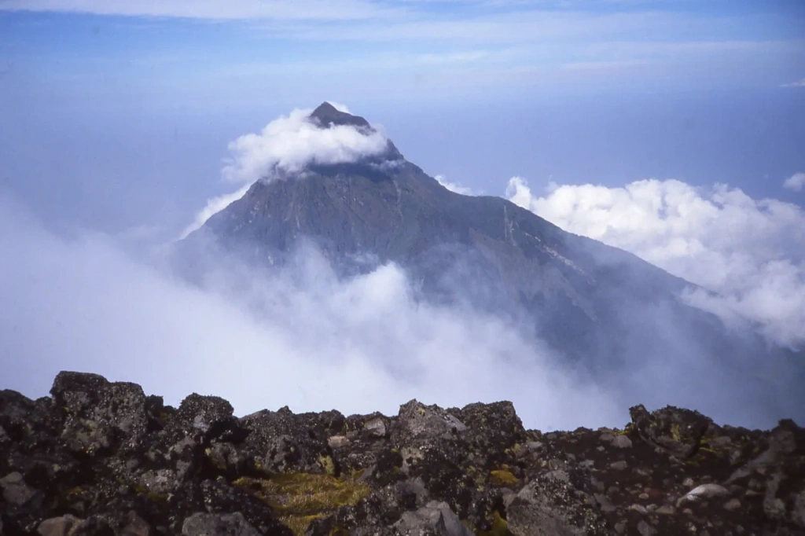
The Karisimbi Mountain is notable for having several climatic zones with different types of mountain forests. These include the tropical Neoboutonia forest, bamboo forest, and the crucial Hagenia-Hypericum forest zone, which is essential for the local gorilla population. This area is home to endemic African trees, specifically African redwoods (Hagenia abyssinica). These trees hold significant importance for the endangered mountain gorillas that inhabit the Virunga Mountains.
Above the forests is the zone of heather meadows and swamps. Here, endemic plants such as lobelias (Lobelia wollastonii, Lobelia lanurensis) and giant Senecio erici-rosenii thrive. The latter can reach heights of up to 6 meters (19.7 feet) and are directly associated with the East African mountains. Finally, the summit of Mount Karisimbi is crowned by the so-called alpine desert, where sparse grasses thrive.
Who was the first to ascend Karisimbi?
There is scarce information about the first ascent of Mount Karisimbi. Different accounts provide varying details about the years of conquering the summit and the names of those who achieved it. The names of renowned African explorers such as John Hanning Speke and Henry Morton Stanley are mentioned, but they only observed the Virunga Mountains from a distance. The name of Adolf Friedrich, Duke of Mecklenburg-Schwerin, is also mentioned. He did participate in an expedition to the Virunga Mountains in 1907–08, but his contribution primarily resulted in the first maps of this volcanic chain. In 1911, the well-known German explorer Hans Meyer reached the summit of Karisimbi, but it is doubtful that he was the first.
An individual named Barthelemy likely was the first to conquer this mountain in 1903. Little is known about him. During that time, the territory of the modern-day Democratic Republic of Congo belonged to the Belgian king, and it was actively explored by many Europeans.
The expedition of 1908 led by Egon von Kirschstein became well-known. As the group was descending through the crater, a sudden blizzard struck, accompanied by heavy rain and hail, causing a sharp drop in temperature. Not everyone returned from that expedition. Tragically, twenty porters – local residents, froze to death.
What does the name "Karisimbi" mean?
The name "Karisimbi" in the Rwandan language means "white shell." This refers to the hail and wet snow that periodically fall on the summit due to storms. Interestingly, the Virunga Mountains, including Karisimbi, also have another name—Mufumbiro. Translated literally from the Kongo language, it means "those who cook." This refers to the smoke above active volcanoes, which locals observed and likened to smoke rising from food being cooked over a fire.
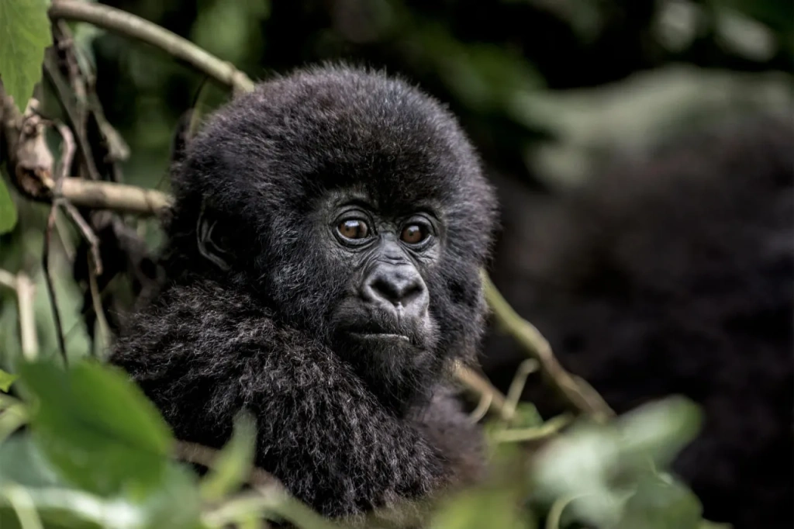
Mountain gorillas of the Virunga Mountains
The Virunga Mountains are globally renowned for mountain gorillas. Gorillas are considered the closest relatives to humans among primates, alongside orangutans and chimpanzees. They were discovered in the Virunga Mountains in 1902. In 1925, the first national park in Africa was established to protect their habitat. This credit goes to biologist . It was he who quickly realized the urgent need to save gorillas from complete extinction. One hundred years have passed, but even now, mountain gorillas are classified as an endangered species, with fewer than a thousand individuals remaining in the wild.
Dian Fossey gained worldwide fame when her photo appeared on the cover of
National Geographic in 1970. For 18 years, she lived and worked on the
slopes of the Virunga Mountains, studying mountain gorillas and protecting
them from poachers. Fossey was one of the —three
courageous researchers studying hominoids in their natural habitats,
commissioned by the renowned anthropologist Louis Leakey.
Her book
"Gorillas in the Mist" became a bestseller and remains the most popular book
about gorillas. A remarkable film of the same name was made based on the book,
with Sigourney Weaver in the lead role. We recommend watching it to anyone
interested in Africa and wildlife. The story of the brave Dian Fossey, who
gave her life for the beloved gorillas, still captivates the hearts of many.
The research center she founded, called Karisoke, still operates and is
named after the two mountains between which it is located, Mount Karisimbi
and Mount Bisoke. After Fossey's mysterious murder, she was buried on the
grounds of the research center.

9th Place. Ras Dashen — 4550 meters (14,928 feet)
Mount Ras Dashen (also known as Ras Dejen) is located in northern Ethiopia and is the highest point of the Ethiopian Highlands, an ancient mountain system in northeast Africa. Due to its significant height and vast plateau, the highlands are sometimes referred to as the "roof of northeast Africa," with the actual title of the "roof of Africa" reserved for the continent's highest peak, which we will soon explore.
The birthplace of Arabica coffee
It was in the elevations of the Ethiopian Highlands that a plant was discovered whose fruits were so beloved that it spread worldwide. We're talking about the Arabica coffee tree. We delve into the coffee's history on our blog while searching for the world's best Arabica. And yes, Africa cultivates excellent coffee, including in Ethiopia. However, coffee doesn't grow on Mount Ras Dashen as it receives too little precipitation, and coffee trees prefer altitudes up to 2000 meters. On the mountain, you can find the Walia ibex—an Ethiopian endemic with just over 500 individuals.
Simien National Park
Ras Dashen is part of the Simien National Park, home not only to Walia ibexes but also to leopards, servals, caracals, geladas (primates exclusive to the Ethiopian Highlands), and very rare Ethiopian wolves, with fewer than 200 remaining. All of these factors make Simien Mountains and National Park a worthwhile travel destination.
Name: Ras Dashen
Height: 4550 meters (14,928 feet)
Country: Ethiopia
First Ascent: 1841, Joseph Galinier and Pierre Ferret
Climbing Difficulty: Relatively easy trekking
Expedition Duration: 1-5+ days
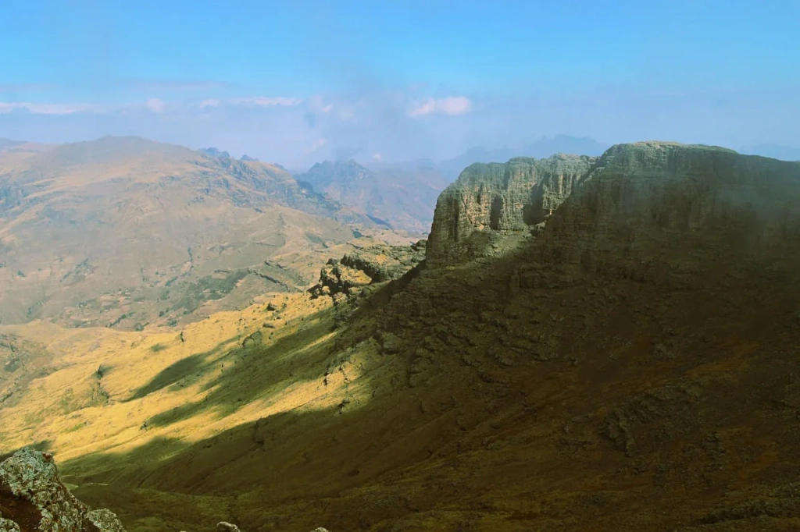
Mount Ras Dashen elevation
There are conflicting reports about Mount Ras Dashen's elevation. Some references retain outdated data from the 1970s, stating a height of 4533 meters. In 2005, satellite measurements confirmed an elevation of 4550 meters above sea level, recognized by the International Cartographic Association.
There's also a debate about the pronunciation of the name. It seems that Ras Dashen is a modification of Ras Dejen in Amharic. Locals long noticed that this mountain rises above all others, hence the name. Translated from Amharic, Ras Dashen means something like the "head of the mountains." There's also a legend that in ancient times, a king who ruled all of Ethiopia lived on the mountain. After his death, his spirit remained at the summit, leading to the mountain being named in his honor.
Due to its significant height, the mountain's summit is often covered with snow, albeit briefly—it melts within a few hours. Nevertheless, during the cold season, snow can fall frequently and persist for up to two consecutive months.
Mount Ras Dashen expeditions
Mount Ras Dashen is relatively easy to climb. Those heading to the summit start from the base camp, bypass numerous shepherd stops, and, at an altitude of 4300 meters, pass by the ruins of an old fort built in the 19th century. Due to the route's ease, it is assumed that local residents, especially shepherds, could have ascended the Ethiopian mountain long before foreigners. However, the first documented ascent was by two French explorers in 1841—Joseph Galinier and Pierre Ferret. At that time, Ethiopia was an empire known as Abyssinia. The French produced the first detailed maps of these territories.
Modern ascents of Ras Dashen vary in duration, depending on the program. There are 5–8 day expedition programs, as well as shorter ones. In theory, the mountain can be climbed in one daylight period if one approaches the base camp closely and immediately starts trekking. However, longer programs allow for better altitude acclimatization and provide the opportunity to see much more of the landscapes in Simien National Park.
8th Place. Mount Meru – 4566 meters (14,977 feet)
Meru is a volcano located in northern Tanzania, a country in East Africa. Meanwhile, in India, in the Himalayas, there is a mountain commonly referred to as Meru Peak. Its height is 6660 meters (21,981 feet), and it has no connection to Africa. There is also a Mount Meru mentioned in Hindu, Buddhist, and Jain traditions. In reality, that mountain does not exist; it is a mythical sacred symbol. So, let's return to Tanzania and the real Mount Meru.
Name: Mount Meru
Height: 4566 meters (14,977 feet)
Peaks: Socialist Peak, Little Meru
Country: Tanzania
First Ascent: 1901, Carl Uhlig; or 1904, Fritz Jaeger
Climbing Difficulty: Moderate
Expedition Duration: 3–4 days
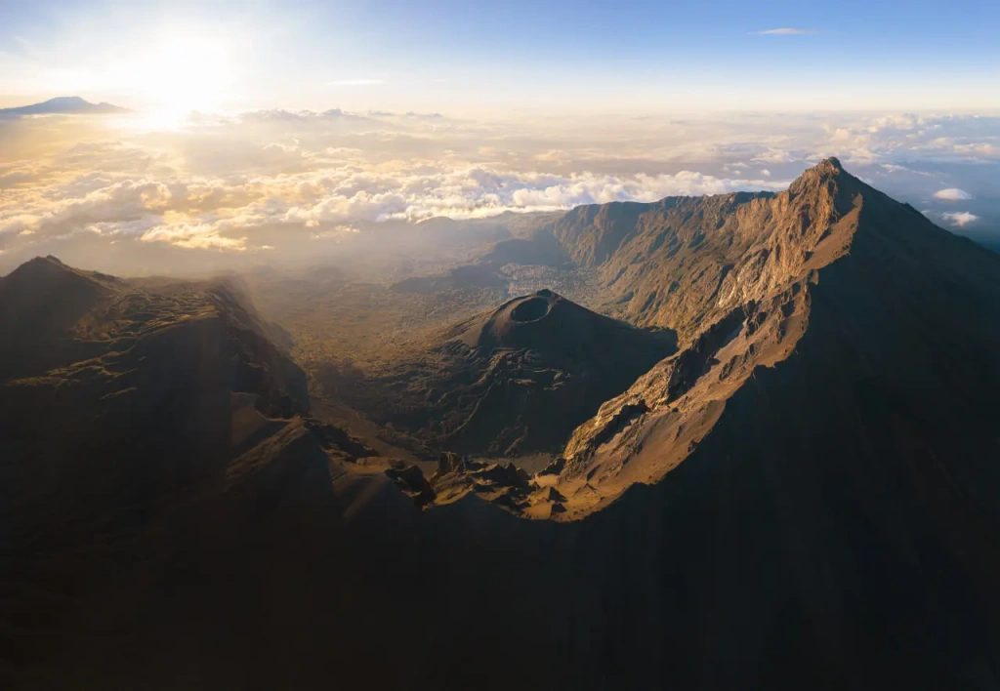
The African Mount Meru is a volcano that is technically considered active, depending on the classification. The last activity was recorded in 1910. Previous eruptions occurred tens of thousands of years ago. Today, Meru is considered a tourist attraction, and ascending the mountain is a popular activity, with the expedition not considered particularly challenging.
Who was the first to climb Meru?
Humans first reached the summit of Meru in the early 20th century. It is currently unknown in which specific year and by whom. In 1901, German geographer Carl Uhlig explored the mountain, but it is unclear if he reached the actual summit. In 1904, he, along with Fritz Jaeger, explored the territories in northern present-day Tanzania. German scientists discovered and described Lake Eyasi, as well as the "Giant Crater Highlands," now known as the Ngorongoro Crater. It is believed that in 1904, Jaeger climbed Meru. The question remains whether he was the first.
Mount Meru elevation
Another question that often arises is the true height of Meru. The range of different data is 4550–4567 meters above sea level. The latest measurements, taken in 2022 by researchers from the University of KwaZulu-Natal in South Africa, give the figure of 4566 meters (14,977 feet). This is the height we consider, defining Meru as the eighth-highest mountain in Africa.
Like Karisimbi and Ras Dashen Peak, Meru is located within a national park. Climbing Meru, you will be trekking within Arusha National Park. During a visit to this volcano, you may encounter various wildlife, such as giraffes, buffaloes, zebras, antelopes, and even elephants.
Why is it called Meru? This is the name given by the people living at the foot of the Tanzanian mountain. Climbing Meru is definitely worth it, as its summit offers a unique view of Mount Kilimanjaro.
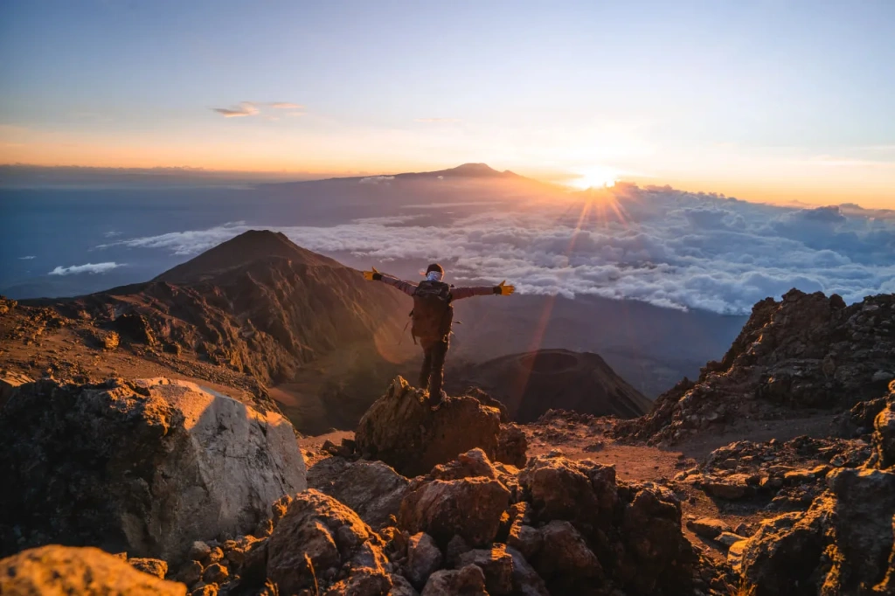
Mount Meru expeditions
The ascent takes 4 days, following the only Momella route, and accommodation involves staying in comfortable wooden huts. Contact our team, and we will organize a memorable and safe expedition to Mount Meru for you.
We will return to Tanzania at the conclusion of our list. Meanwhile, let's move on to neighboring Uganda.
7th place. Mount Gessi - 4715 meters (15,469 feet)
Now we will head to the border of the Democratic Republic of Congo and Uganda. The dividing line between the two countries runs along the Rwenzori mountain range, stretching between the two , Albert and Edward. Rwenzori consists of six main mountains. Five of those are among the top 10 of Africa's highest peaks. The rarely mentioned Luigi di Savoia mountain, named after Italian Prince Luigi Amedeo of Savoy, is also part of this list.
Mountains of the Moon
When the geographer Claudius Ptolemy compiled maps of the known world in the second century AD, he indicated that the great Nile River begins in deep Africa near the Moon Mountains. Most likely, he was referring to the Rwenzori Mountains. When the source of the Nile was discovered in the 19th century, putting an end to years of disputes and research, British explorer Henry Morton Stanley instructed the next generation of explorers to study this mountainous region. The task fell to the explorer Luigi Amedeo.
In the early 20th century, Luigi Amedeo climbed all the highest peaks of the Rwenzori range, visiting 16 peaks. Ironically, he missed only one mountain, later named after him—Mount Luigi di Savoia. Its height is 4627 meters (15,180 feet). However, this mountain lacks the to be considered independent. So, we skip it and move on to Mount Gessi.
Name: Mount Gessi
Height: 4715 meters (15,469 feet)
Countries: Uganda, Democratic Republic of Congo
First Ascent: 1906, Luigi Amedeo with a team
Climbing Difficulty: moderate due to wet rocks
Expedition Duration: 9–11 days
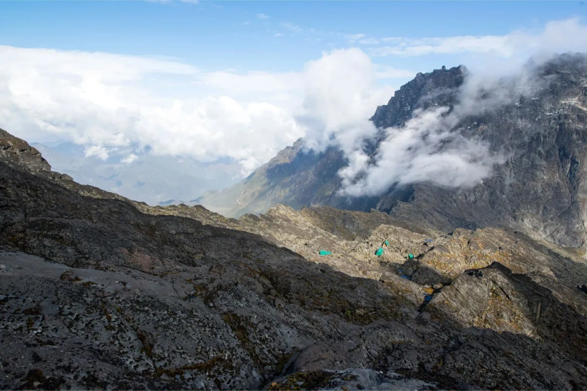
Mount Gessi is located in the northeast of the central part of Rwenzori, where the main mountain massifs are concentrated. The main peaks of Gessi are Iolanda and Bottego. All the mountains here resemble each other in both landscapes and flora and fauna. A little later we will describe what exactly can be seen on their slopes. First, let’s talk about the names.
In the modern days, no one has called these mountains the Mountains of the Moon. Of all the spelling and pronunciation options like Ruwenzori and Rwenjura, Rwenzori has stuck. The original name dates back to the phrase in the Tooro local language - Rwenjura. It can be translated as "rainmaker" or "king of clouds." Such naming is completely justified since it rains about 300 days a year in these mountains, and their peaks are constantly shrouded in clouds.
Romolo Gessi
Mount Gessi itself was named after the Italian explorer of Africa, Romolo Gessi. He completed complex studies of the Nile basin. Gessi discovered that Lake Albert feeds the river and is one of its key sources. It took 20 years to discover all the sources of the Nile. By the way, it was Romolo Gessi who first saw the Rwenzori Mountains in 1876, although the credit for the discovery went to the British explorer Henry Morton Stanley, who saw them and reported his finding twelve years later.
Mount Gessi expeditions
Climbing Gessi is not challenging from a technical mountaineer's point of view. However, constant rains and a wet rocky trail add difficulties. Climbers are also warned that there is a lot of slippery moss on the route, making the expedition a bit more challenging and risky. There are huts on the slopes of the mountain where you can spend the night during the ascent.
6th place. Mount Emin - 4798 meters (15,741 feet)
Emin is the northernmost of the main Rwenzori mountain massifs. It is entirely located in the Democratic Republic of the Congo. So, unlike with Gessi, you can only climb to the top of this mountain from one side. Mount Emin is called the twin sister of Gessi. They stand very close, separated by a deep valley.
Name: Emin
Height: 4798 meters (15,741 feet)
Country: Democratic Republic of Congo
First Ascent: 1906, Luigi Amedeo with a team
Climbing Difficulty: high, requires climbing equipment
Expedition Duration: 10–12 days
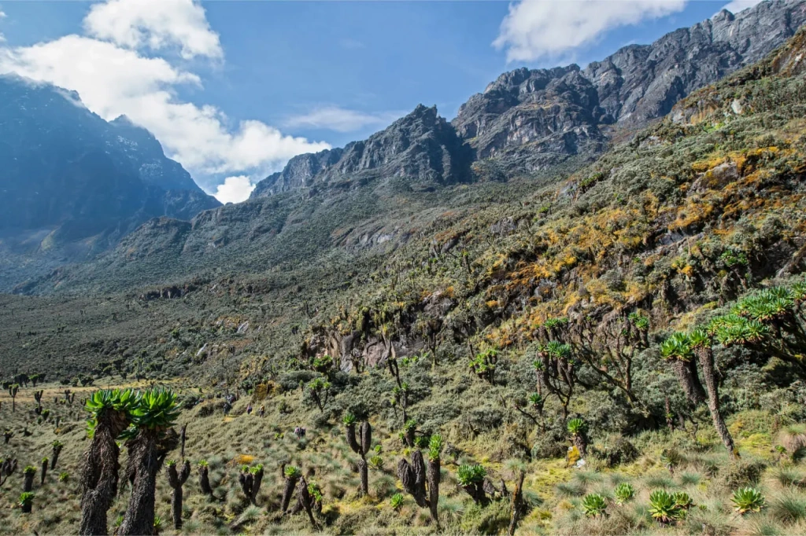
Emin Pasha
This mountain was named after the famous German explorer of Africa, Emin Pasha. His story is extremely interesting. Born into a Jewish family in Germany, Eduard Schnitzer became a doctor and went to work as a physician in the Ottoman Empire. There he converted to Islam and took the name Muhammad al-Amin. The world knows him as Emin Pasha. Pasha is a high political title in Muslim countries.
In 19th-century Egypt, he was appointed governor of Equatoria, a British province in northern Africa. These territories now belong to South Sudan and Uganda. Emin Pasha organized expeditions upstream of the Nile, engaged in research, and sent plant and animal samples to Europe. Several plants, animals, and birds are named after him. He was often accompanied by Henry Morton Stanley on his expeditions. It was Stanley who saved Emin Pasha when a rebellion against Egyptian rule broke out in Sudan, and the governor was cut off from the outside world for several years.
Subsequently, Emin Pasha explored the territories south and east of Lake Victoria, which later came under the control of the German Empire and now belong to independent Tanzania. This researcher founded the city of Bukoba on the eastern shore of Victoria. He gained fame for his efforts against the slave trade, leading to his death during an expedition to the Congo River. Arab slave traders sought revenge and killed the tireless traveler, scientist, and politician. The mountain range in the Rwenzori was named after him by Luigi Amedeo.
Is it difficult to climb Mount Emin?
Climbing Emin can be considered difficult. The rocky slopes of the rugged mountains are very steep, with protruding teeth and narrow ridges that climbers need to climb to get to the summits. Two important peaks on the mountain are usually visited—Umberto and Crepelin. Only experienced climbers who know how to handle technical climbing equipment take up the challenge. The path to the summit of Emin is closed to beginners.
Those venturing onto Mount Emin must carry mountaineering ropes, ice axes, and other equipment to ensure safety. It's essential to note that all the mountains in the Rwenzori range are often covered in snow. There are even some glaciers still present, making ascents challenging.
5th Place. Mount Baker — 4844 meters (15,889 feet)
Mount Baker is sometimes referred to as a plateau. It has six peaks, the highest of which is Peak Edward, named in honor of King Edward VII of Great Britain. The mountain itself bears the name of the English explorer of the Nile River basin, Samuel White Baker. Incidentally, he also held the title of Pasha and was not just the governor of Equatoria but founded that province. In Europe, he gained fame for discovering Lake Albert.
Mount Baker expeditions
Mountaineers often choose Baker for its beautiful landscapes and moderate difficulty. In some sections where there are deep crevices, ropes are required. Climbers often combine ascents to several peaks in the Rwenzori, such as Baker and the highest one, Stanley. The history of ascents to Baker is rich. In the very year when Prince Luigi Amedeo's team visited the peak, two earlier expeditions had attempted to reach the summit of Mount Baker, but they were unsuccessful.
Name: Baker
Height: 4844 meters (15,889 feet)
Country: Uganda
First Ascent: 1906, Luigi Amedeo with a team
Difficulty of Ascent: Above average, requires mountaineering equipment
Expedition Duration: 5–7 days
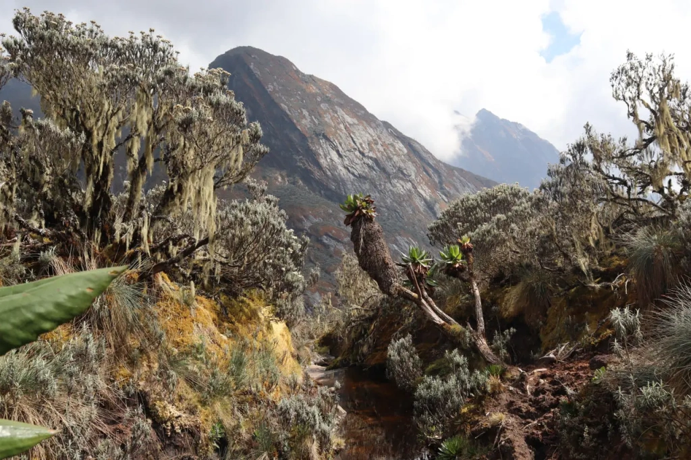
Rwenzori Mountains National Park
Mount Baker and the next two peaks (Speke and Stanley) are located within the Ugandan Rwenzori Mountains National Park. In the neighboring Democratic Republic of the Congo, it borders Virunga National Park, with its main peak being Karisimbi. Both parks are UNESCO World Heritage sites.
The national park is considered one of the most beautiful places in all of Africa. An incredible contrast is created between lush tropical greenery at the mountain base and snowy fields at the summits, often shrouded in clouds. Equatorial glaciers still cover the peaks of the Rwenzori, although they are no longer obstacles on climbing routes as the ice rapidly disappears.
An expedition to the summit of Mount Baker is not only a thrilling mountaineering adventure but also a trek through the magnificent expanses of tropical forests, where one can encounter wild animals and colorful equatorial birds. Several trails lead to the main peak, with some traversing narrow ridge lines and crossing deep crevices. Guides are essential for navigating these routes.
4th Place. Mount Speke — 4890 meters (16,043 feet)
Another majestic mountain within the Rwenzori Mountains National Park is Speke. Like Mount Baker, it has several jagged peaks, and due to its undefined shape, it is sometimes called a plateau. The highest summit is called Vittorio Emanuele in honor of the then King of Italy. This peak was named by the Italian explorer Luigi Amedeo, Prince of Savoy and Duke of Abruzzi. He was a cousin of the ruling king. This is the fourth highest mountain in Africa.
Luigi Amedeo
Luigi Amedeo had an adventurous life. He had been to the North Pole, where he lost two fingers due to frostbite. On an expedition to the Karakoram Range, he set a record by reaching an unprecedented height. In 1909, he climbed Chogolisa in the Masherbrum Range, reaching an altitude of 7498 meters (24,606 feet). Three years earlier, he and a group of other climbers had visited all the peaks of five out of six mountains constituting the main group of the Rwenzori. Speke was among them.
Name: Mount Speke
Height: 4890 meters (16,043 feet)
Country: Uganda
First Ascent: 1906, Luigi Amedeo with a team
Difficulty of Ascent: Moderate, requires mountaineering equipment
Expedition Duration: 10–12 days
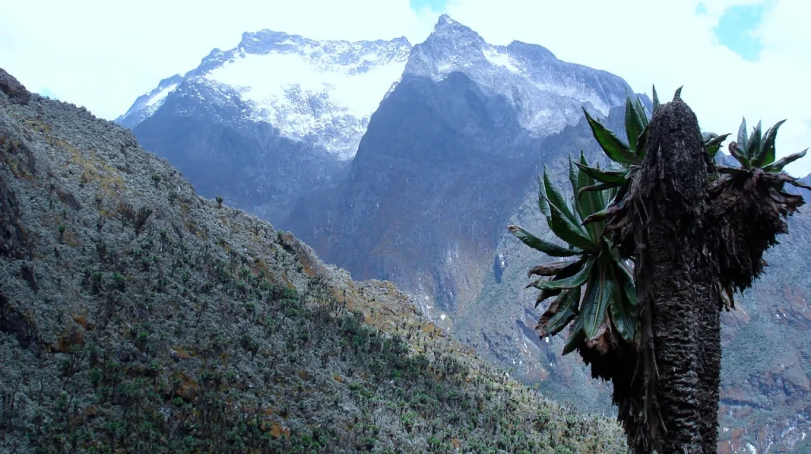
Climbing Mount Speke
Those aiming to ascend all four peaks of Mount Speke should be aware that it is quite a challenging task. The transitions between the peaks require traversing very narrow ridges with sheer cliffs. Ropes are required in certain places. And during the rainy season, rocky paths become slippery, further complicating the ascent.
The difficulty is compensated by the magnificent views from the slopes of Mount Speke. Thanks to abundant rainfall, numerous streams and rivers are formed. The abundance of water not only fosters the richness and diversity of plant life but also attracts a large number of animals inhabiting the lower slopes of Mount Speke. Leopards, antelopes, and even elephants live at the foot of the mountain. The forests are home to chimpanzees, with the Rwenzori Mountains being home to a subspecies known as the Eastern chimpanzee (Pan troglodytes schweinfurthii).
John Hanning Speke
Speke in the name of the mountain is the surname of one of the most famous explorers of Africa, John Hanning Speke. His persistence and fearlessness allowed him to find the coveted source of the Nile and, along with it, the largest lake in Africa — Lake Victoria. In addition, it was Speke, together with James Augustus Grant, who first reported the discovery of the Virunga Mountains. The "Mountains of the Moon" film depicts Speke's explorations alongside Richard Francis Burton. As you may recall, this is how ancient geographers named the Rwenzori when little was known about them.

3rd place. Mount Stanley - 5109 meters (16,762 feet)
Mount Stanley is the highest mountain in the entire Rwenzori range and the third highest peak on the continent. It is rightfully named after the British explorer Henry Morton Stanley. He conducted several expeditions into the depths of unexplored Africa, exploring the upper reaches of the Congo River, completing the mapping of the Great African Lakes, and establishing that the ultimate source of the Nile should be considered the Kagera River, flowing into Lake Victoria. He had other achievements as well.
Henry Morton Stanley
It is believed that Henry Stanley was the first European to reach the Rwenzori Mountains. However, he did not climb the mountains himself. Instead, his last wish was to explore this mountain range. The great explorer's will was fulfilled by Prince Luigi Amedeo two years after Stanley's death. Henry Morton Stanley is placed at the top of the metaphorical pedestal with the pioneers of Africa due to the number of discoveries and explorations he made. This is confirmed by the fact that the highest mountain among the six main mountains of the Rwenzori mountain range is named after him.
Name: Mount Stanley
Height: 5109 meters (16,762 feet)
Countries: Uganda and DRC
First ascent: 1906, Luigi Amedeo with a team
Difficulty of ascent: moderate, requires mountaineering equipment
Expedition duration: 12–14 days
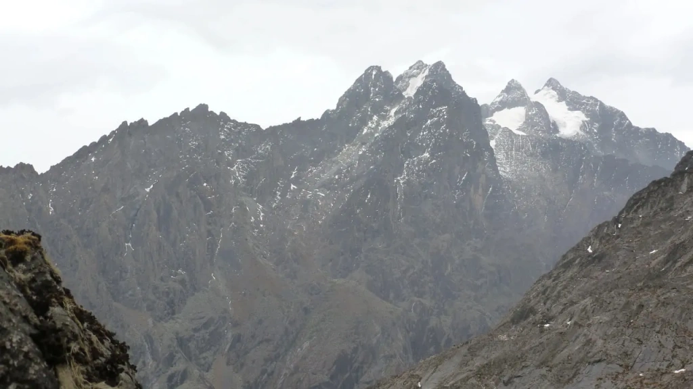
Together with the two previous mountains, Speke and Baker, Mount Stanley forms a triangle in the northern part of the Bujuku Valley. In ancient times, a huge glacier lay in the lowland at the foot of the three mountains. Now there is a lake. This is the most majestic part of the Rwenzori Mountains National Park. Three mountains with white snow caps rise above the green valley, which is now submerged. Once all the Rwenzori massifs were covered with ice. Today, visible remnants of glaciers are found only on the three highest mountains, and Mount Stanley has the most of them. According to calculations, all the ice on the peaks of Rwenzori will disappear by 2025.
Peaks of Mount Stanley
The neighboring countries did not divide Mount Stanley. Instead, they drew the border through the summit. Thus, the peak of this mountain is considered the highest point of both Uganda and the Democratic Republic of Congo. It is called Margherita Peak in honor of Queen Margherita of Italy. By the way, her name can be encountered not only in the Rwenzori Mountains but also in almost any pizzeria – the famous pizza with tomatoes and cheese is also named after her.
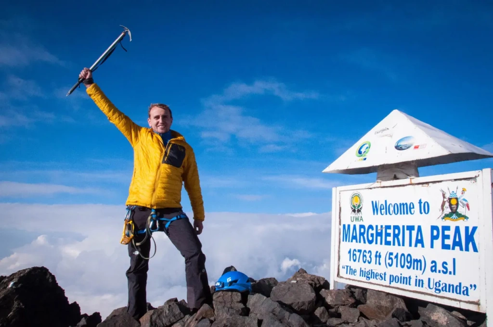
Mount Stanley has other peaks, all of them rocky as well. Alexander's Peak and Margherita Peak are often considered twin peaks. Ropes, crampons, and even ice axes are used on the way to the main summit, as the path traverses icy slopes. There are large crevices in it, where a climber can fall. So, some mountaineering training will be needed to conquer the highest peak in Uganda and the DRC.
On the way to Margherita Peak, climbers pass through tropical forests, then cross bamboo thickets and huge shrubby heather. At altitudes of around 4000 meters (13100 feet), expedition members traverse Afro-alpine meadows and rocky terrain covered with mosses and lichens. Finally, at the summit, they encounter ancient glaciers. At least for now, these glaciers can still be found in the Rwenzori Mountains.
2nd place. Mount Kenya - 5199 meters (17,057 feet)
There are glaciers on Mount Kenya, which gave its name to the country in which this mountain is located. Today, there are 11 glaciers on its summit. The largest ones are called Lewis and Tindall. At the end of the 19th century, when Europeans climbed the mountain and explored it, they counted 18 glaciers, seven of which have already disappeared. It is expected that by the mid-2030s, all the remaining glaciers will also disappear.
Mount Kenya is located in the center of Kenya, just south of the equator. It is an extinct volcano that ceased to erupt about 2.6 million years ago. Today it has several notable peaks, the most popular of which are three. These are Point Lenana (4985 meters / 16,355 feet), Nelion (5188 meters / 17,022 feet), and Batian (5199 meters / 17,057 feet). The first is considered relatively simple, and the ascent to it is a trek. But the two highest ones require mountaineering skills.
Name: Mount Kenya
Height: 5199 meters (17,057 feet)
Country: Kenya
First ascent: 1899, Halford Mackinder with a team
Difficulty of ascent: high, technical climb
Expedition duration: 4–7 days
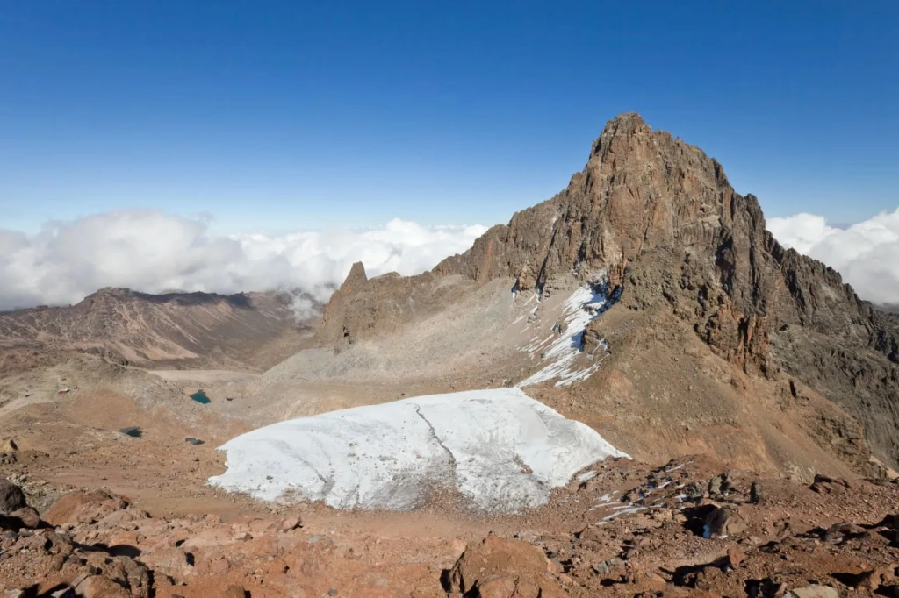
Mount Kenya difficulty
There is a widely held belief that Mount Kenya boasts the most challenging ascent route in all of Africa, or at least within East Africa. What sets this mountain apart is the availability of multiple routes, allowing climbers to select paths that showcase their rock climbing and ice climbing skills. However, the rapid retreat of glaciers on Mount Kenya is causing this unique opportunity to diminish rapidly.
Mount Kenya National Park
Mount Kenya is renowned not only for its glaciers but also for its stunning plant life. As you ascend the slopes, you encounter a humid tropical forest. At around 2400 meters, the forest gives way to bamboo thickets, which, in turn, gradually transition into the zone of giant heather. The afro-alpine moorland at higher altitudes becomes increasingly barren until it finally turns into continuous moss and lichen. At around 4600 meters, only rocks are observable, and as you ascend further, snow and ice are added.
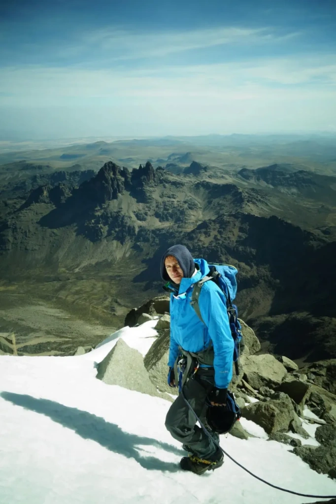
Kenya, one of the tallest mountains in Africa, is located within the Mount Kenya National Park. Leopards, tree hyraxes, rhinos, duikers, and other species of antelope inhabit the park. Colobus monkeys—beautiful black-and-white primates—call the local forests home. The surroundings of Mount Kenya are also home to the world's largest population of Grevy's zebras. Elephants are abundant here too, as this area is part of their migration route. Additionally, the bird diversity around Mount Kenya is said to be impressive.
Mount Kenya first ascent
Many attempts were made to conquer Kenya in the second half of the 19th century, but success awaited a group of climbers led by geographer Helford Mackinder. He was a political theorist who developed and stood at the origins of geopolitics—the complex of views on the world, based on the division of regions into spheres of influence and the confrontation of powers.
In 1899, a group of six Europeans and 164 representatives of local peoples, mainly Kikuyu, successfully ascended the mountain, establishing camps along the route. The ascent was difficult and lengthy, taking almost a month to climb from the base camp to the main peak. In total, the team spent 33 days on the mountain, conducting detailed research on the volcano, as well as its flora and fauna.
The main peak was named Batian by Mackinder in honor of the chief Maasai healer, Mbatian. It is known that eight porters were killed during the ascent, but who did it remains a mystery. Witnesses only testify that Mackinder and another European threatened the porters with death.
Why is Kenya called Kenya?
According to legend, the Germans, Johann Krapf and Johannes Rebmann, who first saw the mountain half a century before the 1899 expedition, recorded two variants of the name: Kenia and Kegnia. These names are close to those used by local peoples: Kikuyu, Embu, and Kamba. Kikuyu dubbed it Kirinyaga, meaning "white" or "shining mountain." Embu called it Kirenyaa, "mountain with brightness," and Kamba named it Kiinyaa, or "ostrich mountain," likening it to the color of ostrich feathers.
There is also a funny legend that Krapf asked a Kamba guide what the mountain was called, meaning the big mountain, but the guide was carrying a pumpkin at that moment. Thinking he was being asked about the pumpkin, he answered "kii-nyaa." Allegedly, this version was then recorded on maps.
1st place. Mount Kilimanjaro — 5895 meters (19341 feet)
Finally, we approach the highest point of the African continent. The legendary mountain, known as the "Roof of Africa," is located in northern Tanzania, near the border with Kenya. Mount Kilimanjaro is the most famous African peak and the tallest mountain on the continent. Tens of thousands of tourists visit annually to witness its snow-capped peak towering above the plains or to summit its highest point.
Name: Mount Kilimanjaro
Height: 5895 meters (19341 feet)
Country: Tanzania
First Ascent: 1889, Hans Meyer and Ludwig Purtscheller
Difficulty of Ascent: Relatively easy
Expedition Duration: 5–10 days
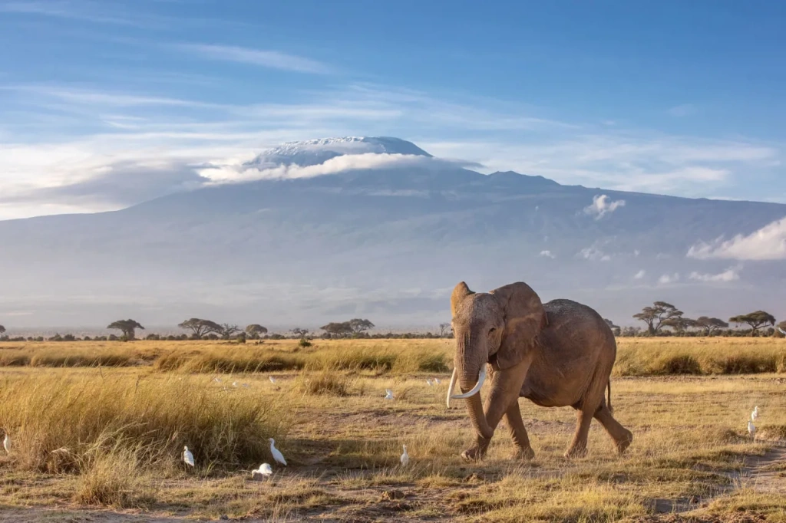
Mount Kilimanjaro is a volcano that began forming approximately 2.5 million years ago. Interestingly, three volcanoes—Shira, Mawenzi, and Kibo—formed in the same location. Each successive volcano destroyed its predecessor through eruptions. There is little left of the first – Shira, while the newest – Kibo, represents the highest elevation. Today, this mountain consists of three volcanic cones. Travellers coming to Tanzania to climb Kilimanjaro will be able to summit the tallest peak of the tallest freestanding mountain in the world.


The highest freestanding mountain in the world
If you climb to the highest peak, you'll read on a sign that Kilimanjaro is the highest freestanding mountain in the world. It is not part of a mountain range but truly stands alone amidst the African plains. However, if we consider each volcano as a separate mountain, then Kibo peak would still be in the first place as the tallest mountain. Mount Kenya would follow second in the list of Africa's highest mountains. And the volcano Mawenzi, with a height of 5149 meters (16922 feet) above sea level, would take third place.
What is the height of Mount Kilimanjaro?
By the way, there is a debate about the height of the main Mt Kilimanjaro volcano. The official height is considered to be 5895 meters (19341 feet), but measurements taken using GPS systems in 2008 gave a slightly lower figure — 5891.8 meters (19329 feet). This difference is not of great importance since it does not affect the rankings.
Mountain Kilimanjaro is a highly popular tourist destination that attracts travelers of various types. Africa's highest peak appeals to nature enthusiasts, adventure seekers, and professional climbers alike.
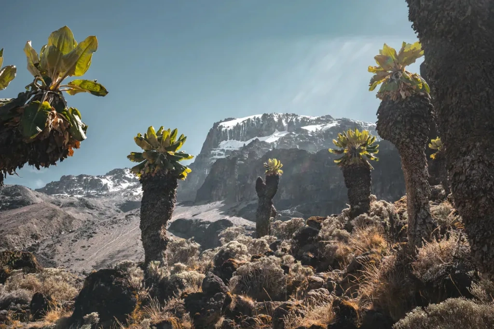
How long does it take to climb Kilimanjaro?
Nature lovers go on safari and are fascinated by this unusual mountain that rises above the savannah while preserving ice and snow at its summit. For them, a one- or two-day trek on Kilimanjaro is ideal. Such an expedition allows you to wander through the mountain's slopes, exploring its rich plant and animal life. Those who embark on a two-day journey stay in wooden huts at an altitude of 2720 meters (8924 feet). They pass through the enchantingly beautiful tropical forest twice. However, it's worth noting that it's on the third day of a full expedition that magnificent views of the mountains and unusual plants on its slopes are revealed.
Hiking and mountain enthusiasts embark on a week-long adventure — a full-fledged expedition to the summit of the tallest mountain. To climb it, you don't need mountaineering gear or extensive climbing experience. Most of the route involves trekking, and the summit itself is a rocky elevation on the edge of the crater. Perhaps the biggest challenge is the altitude, where we receive less oxygen than at sea level. At the top of Kilimanjaro, the inhaled air contains only 40% oxygen molecules compared to 100% at sea level. It is precisely for altitude adaptation that climbing programs are made long enough for the body to adapt.
Professional climbers are interested not so much in the ascent itself but in the accomplishment of conquering the mountain. Being the highest mountain in Africa, Mount Kilimanjaro is part of the list. Often, well-prepared athletes climb the "Roof of Africa" in a day or two. For example, the renowned Nepalese mountaineer Nimsdai spent less than a day on the ascent. The record for the fastest ascent of Kilimanjaro is 4 hours and 56 minutes.
We invite everyone interested to visit Tanzania and this beautiful mountain. There are several routes to its peak, and accommodation is available in both equipped cabins and tent camps. The strongest and most ambitious can even spend the night in the crater under the equatorial starry sky.
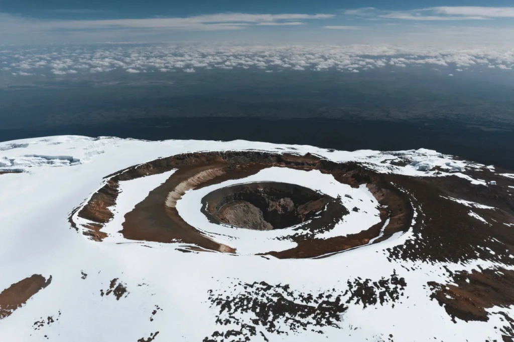
Who was the first to climb Kilimanjaro?
The main peak is called Uhuru, which in Swahili means "freedom." The first to reach it were German explorers Hans Meyer and Ludwig Purtscheller. Meyer succeeded only on his third attempt in 1889. At that time, there was much more ice and snow at the summit, making the ascent more challenging. Now, however, glaciers are disappearing. Like with Kenya and the Rwenzori Mountains, scientists predict the complete disappearance of ice on African peaks in the next couple of decades. Sadly, the era when you could see glaciers near the equator in Africa will soon be gone.
If you love mountains and are fascinated by Africa, come and visit! African mountains are incredibly beautiful. We at Angelino Adventures will be delighted to organize your dream Tanzanian vacation!
In another article, we explore the top ten highest mountains in America and the top five highest mountains on our planet. Did you know that Mount Everest cannot always be considered the highest mountain on Earth, and Kilimanjaro, from a certain perspective, may even be higher than Everest? You can learn that and much more from our detailed blog posts.
All content on Angelino Adventures is created with expert insights and thorough research, in line with our Editorial Policy.


Want to know more about Tanzania adventures?
Get in touch with our team! We've explored all the top destinations across Tanzania. Our Kilimanjaro-based adventure consultants are ready to share tips and help you plan your unforgettable journey.
 Tanzania Safaris
Tanzania Safaris
 Kilimanjaro and other mountains
Kilimanjaro and other mountains
 About Angelino Adventures
About Angelino Adventures
 About Tanzania
About Tanzania